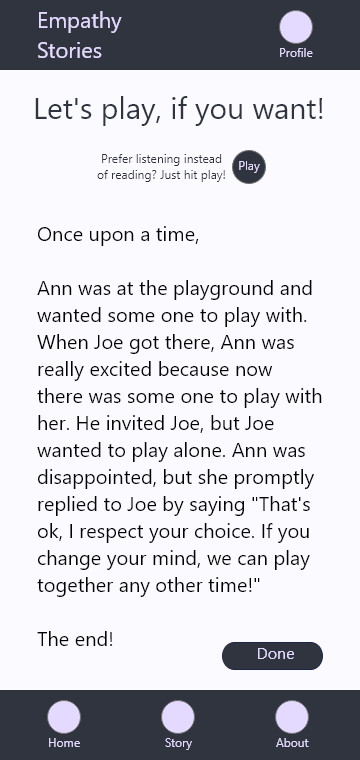
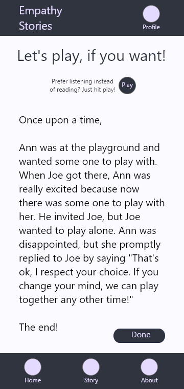
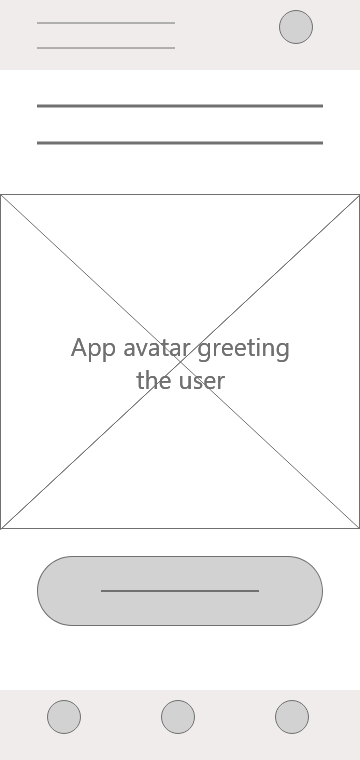
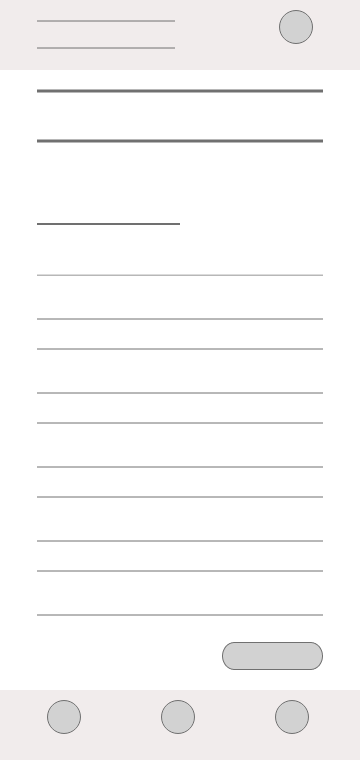
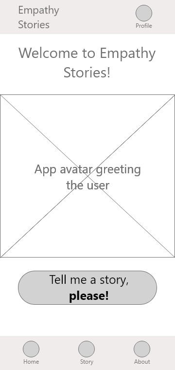
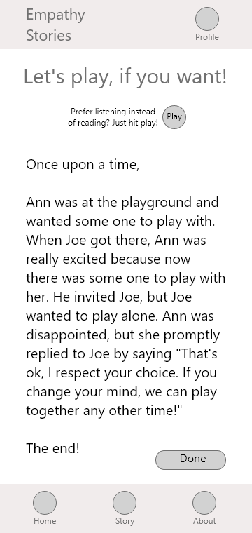
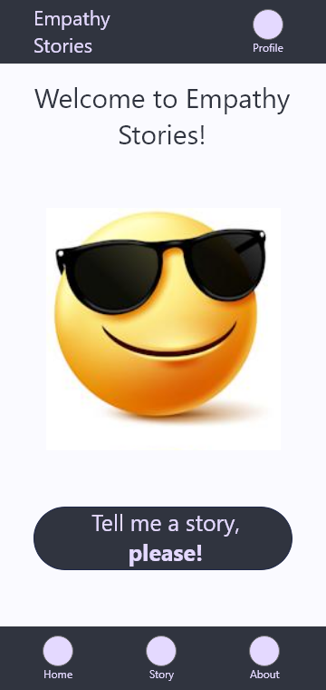
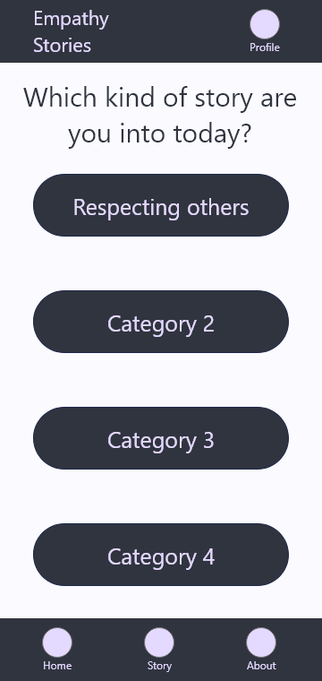
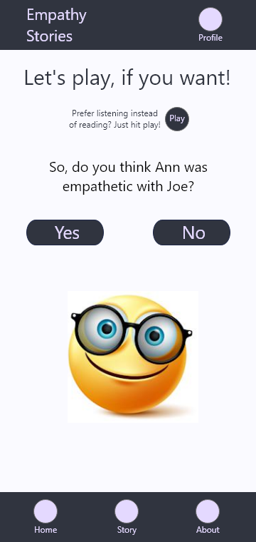
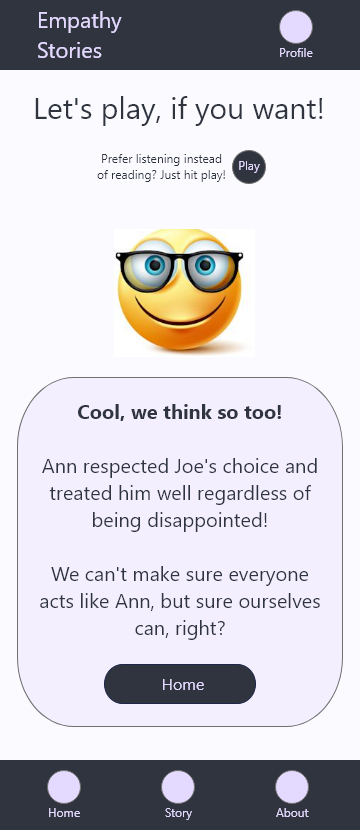

Welcome!

This was one of my projects for the Google UX Design certification. So, I was the Lead Designer (and only member of the project), taking care of the following responsibilities: Research, Ideation, Prototyping, and Testing.
 Helping Kids Learn about Empathy
Helping Kids Learn about Empathy

This was one of my projects for the Google UX Design certification. So, I was the Lead Designer (and only member of the project), taking care of the following responsibilities: Research, Ideation, Prototyping, and Testing.
The goal of this project was to design a tool to help kids learn about empathy.
The target audience of this project was children aged between 8 and 10 who were able to read.
As a design project focused on helping kids learn something, the main challenges were i) to achieve a tool kids find attractive and ii) come up with an approach that would be able to help those kids learn.
In this project, my research study was twofold. First, I focused on finding an effective teaching approach that would be feasible to teach empathy. In this line, I found that scenario-based learning, along with confirmation feedback, was a suitable learning approach. In the line of having something attractive to kids, I found out that I could use game-related elements, such as avatars to increase interactivity and relatedness for children.
In this project, I started by creating some wireframes to test my initial ideas regarding the interface's layout. Take a look at some examples below


Next, evolved those wireframes to demonstrate the kind of texts and interactions I expected from this design. I few examples are shown below.


In testing the wireframes shown above, my main goal was to check the usage flow, the perception regarding the learning approach, and the design suitability to its audience. Mainly, I found that: users need more clear feedback regarding the story, users want to be able to chose the type of story that will be told, and users want a more vivid and children-like inteface.
Based on the usability study results, I i) revised my the feedback provided after reading a story, ii) added a page for users to select the kind of story they want, and iii) made the avatars appear more often. Next, you can check all pages a user pass through, on the mobile version, to complete the task of reading a story. Note that I used emojis, which I downloaded from the internet, only to illustrated the avatar of this fictitious app!




The above flow happens because the story showed an emphatic situation and the user agreed with it. If the user considered the action wasn't emphatic, while in fact it was, the following feedback would be provided:

Working in this project was amazing because I had the opportunity to put in practice all of the knowledges I gained during the Google UX Design certificate. If the app I designed gets lauched, it would help children learn how to be emphatic by example, demonstrating situations they should (or not) follow, and based on confirmation, explicitly telling kids whether a character of the story they just read was empathic or not.
Want to know more about this project? Please don't hesitate to contact me at luiz.r70@gmail.com!